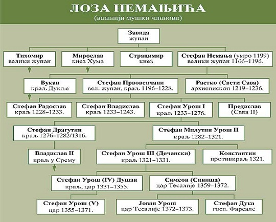

ПОРОДИЧНО СТАБЛО
НЕМАЊИЋИ
ВЛАДАРИ
ЗАДУЖБИНЕ
О АУТОРУ
велики жупан Стефан Немања, велики жупан 1166-1196.
краљ Стефан Првовенчани, велики жупан 1196-1217., краљ Србије 1217-1228. (са прекидом)
краљ Стефан Радослав, краљ Србије 1228-1234.
краљ Стефан Владислав, краљ Србије 1234-1243.
краљ Стефан Урош I, краљ Србије 1243-1276.
краљ Стефан Драгутин, краљ Србије 1276-1282, касније краљ Срема.
краљ Стефан Урош II Милутин, краљ Србије 1282-1321.
краљ Владислав II, 1321-1325. краљ Срема, и непризнати краљ Србије.
цар Стефан Урош IV Душан, краљ Србије 1331-1346., цар Срба, Бугара и Грка 1346-1355.
цар Стефан Урош V Нејаки, цар Србије 1355-1371.
Остали владари:
велики жупан Вукан Немањић, непризнати велики жупан 1202-1204.
краљ Константин Немањић, непризнати краљ 1321—1322.
царица Бугарске Ана Неда, савладарка сину Ивану Стефану 1330-1331.
цар Симеон (Синиша) Урош Палеолог, цар Епира 1359-1366, цар Тесалије 1359-1371.
цар Јован Урош Палеолог, цар Епира 1371-1372.
кнегиња Милица Хребељановић, савладарка сину Стефану 1389-1393.
Да бисте проширили знање о лози Немањића кликните на дату слику:
